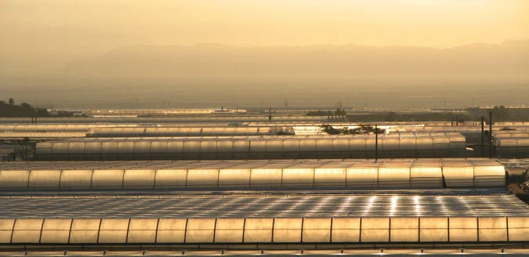

על מנת להבטיח את איכות היבולים, רוב הגידולים גדלים בחממות ובמבנים סגורים אחרים, המגינים עליהם מפני מזיקים ומפגעי מזג האוויר. התוצרת נבדקת, ממוינת ונארזת בבתי האריזה של המגדלים בהתאם לדרישות הלקוח.
העבודה החקלאית מתבצעת תוך מחויבות לשמירה על איכות הסביבה ולצריכה חסכונית של מים.
ענפי הגידול במושב
ירקות
פלפל, עגבנייה, אבטיח, מלון, חציל, בצל, קישוא.
ירקות אורגניים
פלפל, עגבנייה, חציל, אבטיח, תמרים.
פרחים
טרכליום, חמניות, מנתור, לימוניום, ורדים.
מטעים
תמרים, גפנים, מנגו.
תבלינים
בזיליקום, נענע, אורגנו, קורנית, רוזמרין, רוקט.
דגי נוי
גופי, סקלר, פלטי, סייפן, קוי, אנציסטרוס, דגי מים מלוחים.

חדשנות בחקלאות
רוב שטחי הגידול מכוסים בבתי צמיחה ובחממות. בחלק ניכר מהם נעשה שימוש בטכנולוגיה מתקדמת של בקרת אקלים, צינון, חימום ומיחזור מים.
חקלאי המושב נמצאים בחזית הפיתוח של זנים חדשים, והם הראשונים לבחון ולאמץ חידושים בשיטות הגידול, ההשקיה והדברת המזיקים.
פיתוחים מקוריים לדוגמה: הפרח "כסופית המדבר" של צ'יצ'י ינאי, ומגוון רחב של סלטים חתוכים ורטבים תחת המותג "פרסקו" של משק שטרן.

חקלאות ירוקה
החקלאות בחצבה היא חלק בלתי נפרד מהסביבה ומהקהילה, והמגדלים מחויבים לעקרונות הבאים:
תוצרת נקייה
אנו נמנעים משימוש בחומרי ריסוס המסכנים את הבריאות ובחומרים המזהמים את הקרקע, ועושים שימוש נרחב בהדברה ביולוגית – כדי שהפרי שאנו משווקים יהיה נקי ובריא יותר.
חיסכון במים
חלק ניכר מהשדות מושקים במים שאובים שאינם ראויים לשתייה בשל רמת מליחות גבוהה מדי.
מיחזור
אנו מפרידים את הפסולת החקלאית – שאריות ניילון, חוטי הדליה וקרטונים – ומעבירים אותה למיחזור. הפסולת האורגנית נקצצת והופכת לדשן.

חקלאות אורגנית
החקלאות האורגנית פורחת בחצבה, והירקות האורגניים יפים, טעימים ובריאים בזכות אוסף תנאים ייחודי:
אזור מבודד עם אוויר צלול
חצבה מרוחקת מכל יישוב עירוני ומתעשייה, והגידולים נהנים מאוויר צלול ללא שאריות זיהום. שטחי הגידול האורגני מרוחקים משטחי הגידול הרגילים, כך שהחשיפה לשאריות ריסוס ולהעברת מזיקים קטנה ביותר.
יותר אור, פחות קרינה
הגידולים נהנים מ-365 ימי שמש בשנה. גובה המושב – 300 מ' מתחת לפני הים – מוסיף מרווח סינון משמעותי לקרינה אולטרה-סגולה מזיקה.
יותר יובש, יותר בריאות
האקלים המדברי היבש מונע התפתחות של מחלות עלים ומאפשר להימנע מריסוסים.
מים צלולים, פרי מתוק
הגידולים מושקים במי מעיינות מקומיים הנשאבים ממעמקי האדמה המדברית. המים זכים, אינם מכילים שאריות מזהמים ומאופיינים ברמת מליחות גבוהה, הגורמת לפירות ולירקות להיות מתוקים וטעימים יותר.
עומדים בתקן
המגדלים האורגניים מצויים בחזית הטכנולוגיה החקלאית. כל הגידולים גדלים בבתי צמיחה עם רשתות נגד חרקים ומוגנים בהדברה ביולוגית, ובתי האריזה עומדים בתקני האיכות המחמירים ביותר – כך שהלקוח מקבל תוצרת שטופה, שקולה וארוזה לפי דרישותיו.

